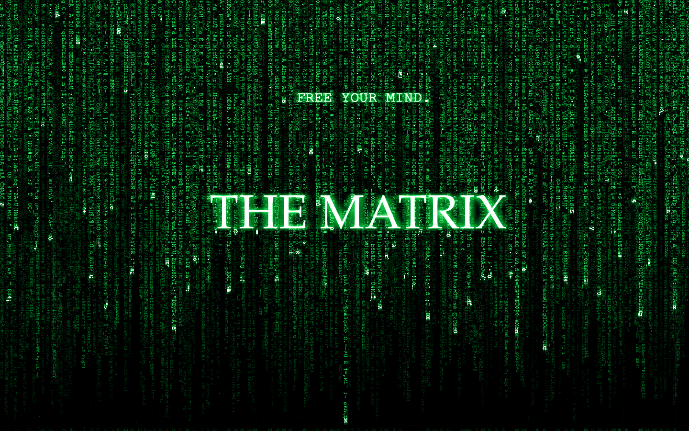

After my graduation in February, I worked for 6 months before decided to join le Wagon. I would like to be able to properly code in different languages in order to join a related project in the AI or blockchain industry.
The Imitation gameAlan Turing, a pioneer of computers, led a group of scholars to crack the codes of Germany's WWII Enigma machine. A genius under nail-biting pressure helped to save millions of lives and was ultimately convicted for the crime of homosexuality. |
|
|  |
MatrixA programmer is brought back to reason and reality when learning he was living in a program created by gigantic machines which make human birth artificial. In order to set humanity free, Neo will have to face many enemies by using technologies and self-trust. |